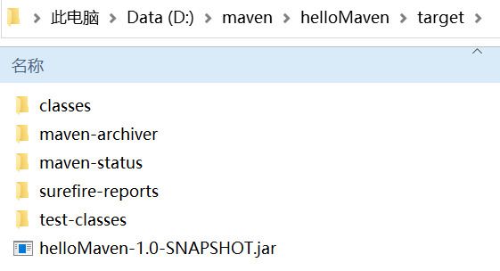

Maven项目的构建与测试
在上一节中，我们介绍了如何使用 archetype 创建 Maven 项目，接下来我们介绍如何构建和测试这个项目。
从以上配置可知，Maven 已经添加了 Junit 作为该项目的测试框架，且 Maven 也在项目中自动生成了一个源码文件 App.java 和一个测试文件 AppTest.java 。
打开命令行窗口，跳转到 D:\maven\helloMaven 目录，执行以下 mvn 命令，对该项目进行构建。
命令执行结果如下：
项目构建完成后，在该项目根目录中生成了一个名为 target 的目录，该目录包含以下内容。
说明：
打开命令控制台，跳转到 D:\maven\helloMaven\target\classes 目录，执行 Java 命令
执行结果如下。
打开 D:\maven\helloMaven\src\main\java\net\biancheng\www 文件夹，在其中创建一个名为 Util.java 的文件。
更新 App 类，调用 Util 类中的 printMessage() 方法，代码如下。
打开命令行窗口，跳转到 D:\maven\helloMaven 目录，并执行如下 Maven 命令，对项目进行编译。
命令执行结果如下。
编译成功后，跳转到 D:\maven\helloMaven\target\classes 目录下，执行以下 Java 命令。
执行结果如下。
构建项目
查看 helloMaven 项目的 pom.xml 文件，配置如下。
<project xmlns="http://maven.apache.org/POM/4.0.0" xmlns:xsi="http://www.w3.org/2001/XMLSchema-instance"
xsi:schemaLocation="http://maven.apache.org/POM/4.0.0 http://maven.apache.org/maven-v4_0_0.xsd">
<modelVersion>4.0.0</modelVersion>
<groupId>net.biancheng.www</groupId>
<artifactId>helloMaven</artifactId>
<packaging>jar</packaging>
<version>1.0-SNAPSHOT</version>
<name>helloMaven</name>
<url>http://maven.apache.org</url>
<dependencies>
<dependency>
<groupId>junit</groupId>
<artifactId>junit</artifactId>
<version>3.8.1</version>
<scope>test</scope>
</dependency>
</dependencies>
</project>
从以上配置可知，Maven 已经添加了 Junit 作为该项目的测试框架，且 Maven 也在项目中自动生成了一个源码文件 App.java 和一个测试文件 AppTest.java 。
打开命令行窗口，跳转到 D:\maven\helloMaven 目录，执行以下 mvn 命令，对该项目进行构建。
mvn clean package
命令执行结果如下：
[INFO] Scanning for projects... [INFO] [INFO] --------------------< net.biancheng.www:helloMaven >-------------------- [INFO] Building helloMaven 1.0-SNAPSHOT [INFO] --------------------------------[ jar ]--------------------------------- [INFO] [INFO] --- maven-clean-plugin:2.5:clean (default-clean) @ helloMaven --- [INFO] Deleting D:\maven\helloMaven\target [INFO] [INFO] --- maven-resources-plugin:2.6:resources (default-resources) @ helloMaven --- [WARNING] Using platform encoding (GBK actually) to copy filtered resources, i.e. build is platform dependent! [INFO] skip non existing resourceDirectory D:\maven\helloMaven\src\main\resources [INFO] [INFO] --- maven-compiler-plugin:3.1:compile (default-compile) @ helloMaven --- [INFO] Changes detected - recompiling the module! [WARNING] File encoding has not been set, using platform encoding GBK, i.e. build is platform dependent! [INFO] Compiling 1 source file to D:\maven\helloMaven\target\classes [INFO] [INFO] --- maven-resources-plugin:2.6:testResources (default-testResources) @ helloMaven --- [WARNING] Using platform encoding (GBK actually) to copy filtered resources, i.e. build is platform dependent! [INFO] skip non existing resourceDirectory D:\maven\helloMaven\src\test\resources [INFO] [INFO] --- maven-compiler-plugin:3.1:testCompile (default-testCompile) @ helloMaven --- [INFO] Changes detected - recompiling the module! [WARNING] File encoding has not been set, using platform encoding GBK, i.e. build is platform dependent! [INFO] Compiling 1 source file to D:\maven\helloMaven\target\test-classes [INFO] [INFO] --- maven-surefire-plugin:2.12.4:test (default-test) @ helloMaven --- [INFO] Surefire report directory: D:\maven\helloMaven\target\surefire-reports Downloading from central: https://repo.maven.apache.org/maven2/org/apache/maven/surefire/surefire-junit3/2.12.4/surefire-junit3-2.12.4.pom Downloaded from central: https://repo.maven.apache.org/maven2/org/apache/maven/surefire/surefire-junit3/2.12.4/surefire-junit3-2.12.4.pom (1.7 kB at 1.3 kB/s) Downloading from central: https://repo.maven.apache.org/maven2/org/apache/maven/surefire/surefire-junit3/2.12.4/surefire-junit3-2.12.4.jar Downloaded from central: https://repo.maven.apache.org/maven2/org/apache/maven/surefire/surefire-junit3/2.12.4/surefire-junit3-2.12.4.jar (26 kB at 51 kB/s) ------------------------------------------------------- T E S T S ------------------------------------------------------- Running net.biancheng.www.AppTest Tests run: 1, Failures: 0, Errors: 0, Skipped: 0, Time elapsed: 0.007 sec Results : Tests run: 1, Failures: 0, Errors: 0, Skipped: 0 [INFO] [INFO] --- maven-jar-plugin:2.4:jar (default-jar) @ helloMaven --- [INFO] Building jar: D:\maven\helloMaven\target\helloMaven-1.0-SNAPSHOT.jar [INFO] ------------------------------------------------------------------------ [INFO] BUILD SUCCESS [INFO] ------------------------------------------------------------------------ [INFO] Total time: 4.775 s [INFO] Finished at: 2021-03-02T17:20:15+08:00 [INFO] ------------------------------------------------------------------------
项目构建完成后，在该项目根目录中生成了一个名为 target 的目录，该目录包含以下内容。

图1：target 目录
说明：
- Maven 命令中包含了两个命令：clean 和 package，其中 clean 负责清理 target 目录，package 负责将项目构建并打包输出为 jar 文件。
- classes：源代码编译后存放在该目录中。
- test-classes：测试源代码编译后并存放在该目录中。
- surefire-reports：Maven 运行测试用例生成的测试报告存放在该目录中。
- helloMaven-1.0-SNAPSHOT.jar：Maven 对项目进行打包生成的 jar 文件。
打开命令控制台，跳转到 D:\maven\helloMaven\target\classes 目录，执行 Java 命令
java net.biancheng.www.App
执行结果如下。
Hello World!
测试项目
下面我们介绍如何在 Maven 项目中添加其他的 Java 文件，并进行测试。打开 D:\maven\helloMaven\src\main\java\net\biancheng\www 文件夹，在其中创建一个名为 Util.java 的文件。
package net.biancheng.www;
/**
* Maven 项目中添加的自定义java类
*
* @author 编程帮 www.biancheng.net
*/
public class Util {
public static void printMessage(String message) {
System.out.println(message);
}
}
更新 App 类，调用 Util 类中的 printMessage() 方法，代码如下。
package net.biancheng.www;
/**
* @author 编程帮 www.biancheng.net
*/
public class App {
public static void main(String[] args) {
Util.printMessage("编程帮欢迎您，网址：www.biancheng.net");
}
}
打开命令行窗口，跳转到 D:\maven\helloMaven 目录，并执行如下 Maven 命令，对项目进行编译。
mvn clean compile
命令执行结果如下。
[INFO] Scanning for projects... [INFO] [INFO] --------------------< net.biancheng.www:helloMaven >-------------------- [INFO] Building helloMaven 1.0-SNAPSHOT [INFO] --------------------------------[ jar ]--------------------------------- [INFO] [INFO] --- maven-clean-plugin:2.5:clean (default-clean) @ helloMaven --- [INFO] Deleting D:\maven\helloMaven\target [INFO] [INFO] --- maven-resources-plugin:2.6:resources (default-resources) @ helloMaven --- [WARNING] Using platform encoding (GBK actually) to copy filtered resources, i.e. build is platform dependent! [INFO] skip non existing resourceDirectory D:\maven\helloMaven\src\main\resources [INFO] [INFO] --- maven-compiler-plugin:3.1:compile (default-compile) @ helloMaven --- [INFO] Changes detected - recompiling the module! [WARNING] File encoding has not been set, using platform encoding GBK, i.e. build is platform dependent! [INFO] Compiling 2 source files to D:\maven\helloMaven\target\classes [INFO] ------------------------------------------------------------------------ [INFO] BUILD SUCCESS [INFO] ------------------------------------------------------------------------ [INFO] Total time: 0.853 s [INFO] Finished at: 2021-03-03T09:26:29+08:00 [INFO] ------------------------------------------------------------------------
编译成功后，跳转到 D:\maven\helloMaven\target\classes 目录下，执行以下 Java 命令。
java net.biancheng.www.App
执行结果如下。
编程帮欢迎您，网址：www.biancheng.net
关注公众号「站长严长生」，在手机上阅读所有教程，随时随地都能学习。内含一款搜索神器，免费下载全网书籍和视频。

微信扫码关注公众号